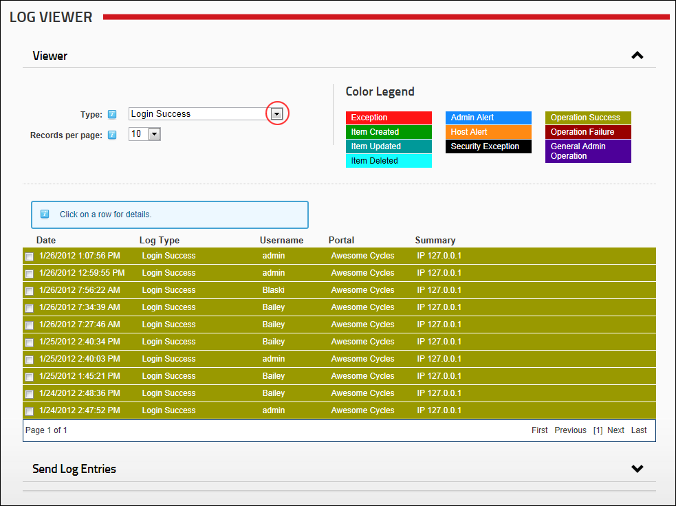

<<<<<<< HEAD
=======
>>>>>>> 72_release
Filtering Events
How to filter the events displayed in the Log Viewer.
- Navigate to Admin >
 Event Viewer - OR - Navigate to a Log Viewer module.
Event Viewer - OR - Navigate to a Log Viewer module.
- Expand the Viewer section.
- At Type, select an event type from the drop down list. The matching records will then be displayed below.
<<<<<<< HEAD
- At Records per page, select the number of records to be displayed per page from the drop down list.
=======
- At Records per page, select the number of records to be displayed per page from the drop down list. You can choose to display up to 250 records per page however the viewer will default back to 25 records each time the page is refreshed.
>>>>>>> 72_release

Filtering Log Viewer records by event type